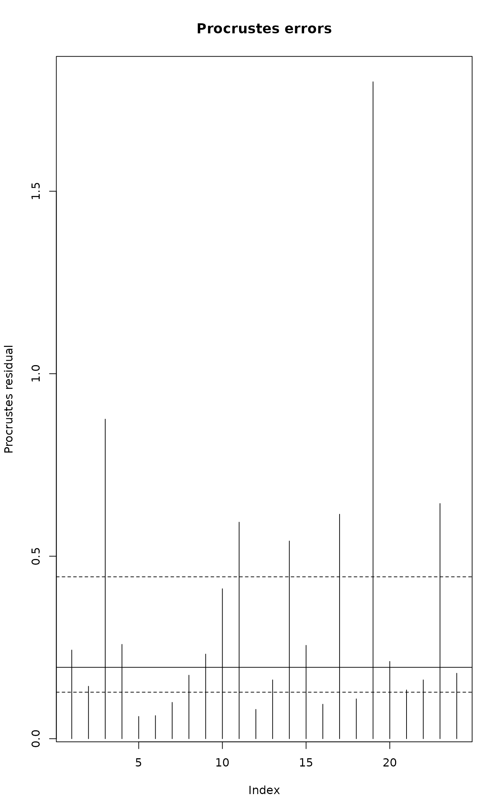
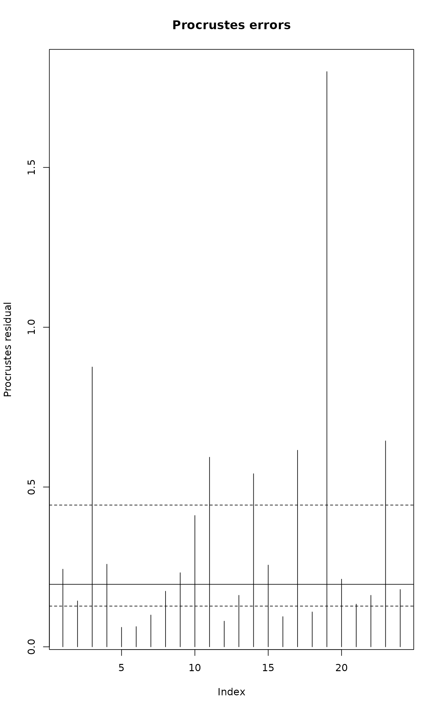

Procrustes Rotation of Two Configurations and PROTEST
procrustes.RdFunction procrustes rotates a configuration to maximum similarity
with another configuration. Function protest tests the
non-randomness (significance) between two configurations.
Usage
procrustes(X, Y, scale = TRUE, symmetric = FALSE, scores = "sites", ...)
# S3 method for class 'procrustes'
summary(object, digits = getOption("digits"), ...)
# S3 method for class 'procrustes'
plot(x, kind=1, choices=c(1,2), to.target = TRUE,
type = "p", xlab, ylab, main, ar.col = "blue", length=0.05,
cex = 0.7, ...)
# S3 method for class 'procrustes'
points(x, display = c("target", "rotated"),
choices = c(1,2), truemean = FALSE, ...)
# S3 method for class 'procrustes'
text(x, display = c("target", "rotated"),
choices = c(1,2), labels, truemean = FALSE, ...)
# S3 method for class 'procrustes'
lines(x, type = c("segments", "arrows"),
choices = c(1, 2), truemean = FALSE, ...)
# S3 method for class 'procrustes'
residuals(object, ...)
# S3 method for class 'procrustes'
fitted(object, truemean = TRUE, ...)
# S3 method for class 'procrustes'
predict(object, newdata, truemean = TRUE, ...)
protest(X, Y, scores = "sites", permutations = how(nperm = 999), ...)Arguments
- X
Target matrix
- Y
Matrix to be rotated.
- scale
Allow scaling of axes of
Y.- symmetric
Use symmetric Procrustes statistic (the rotation will still be non-symmetric).
- scores
Kind of scores used. This is the
displayargument used with the correspondingscoresfunction: seescores,scores.ccaandscores.ccafor alternatives.- x, object
An object of class
procrustes.- digits
Number of digits in the output.
- kind
For
plotfunction, the kind of plot produced:kind = 1plots shifts in two configurations,kind = 0draws a corresponding empty plot, andkind = 2plots an impulse diagram of residuals.- choices
Axes (dimensions) plotted.
- xlab, ylab
Axis labels, if defaults unacceptable.
- main
Plot title, if default unacceptable.
- display
Show only the
"target"or"rotated"matrix as points.- to.target
Draw arrows to point to target.
- type
The type of plot drawn. In
plot, thetypecan be"points"or"text"to select the marker for the tail of the arrow, or"none"for drawing an empty plot. Inlinesthetypeselects eitherarrowsor linesegmentsto connect target and rotated configuration.- truemean
Use the original range of target matrix instead of centring the fitted values. Function
plot.procrustesneedstruemean = FALSE, and adding graphical items to the plots from the original results may needtruemean = TRUE.- newdata
Matrix of coordinates to be rotated and translated to the target.
- permutations
a list of control values for the permutations as returned by the function
how, or the number of permutations required, or a permutation matrix where each row gives the permuted indices.- ar.col
Arrow colour.
- length
Width of the arrow head.
- labels
Character vector of text labels. Rownames of the result object are used as default.
- cex
Character expansion for points or text.
- ...
Other parameters passed to functions. In
procrustesandprotestparameters are passed toscores, in graphical functions to underlying graphical functions.
Details
Procrustes rotation rotates a matrix to maximum similarity with a
target matrix minimizing sum of squared differences. Procrustes
rotation is typically used in comparison of ordination results. It is
particularly useful in comparing alternative solutions in
multidimensional scaling. If scale=FALSE, the function only
rotates matrix Y. If scale=TRUE, it scales linearly
configuration Y for maximum similarity. Since Y is scaled
to fit X, the scaling is non-symmetric. However, with
symmetric=TRUE, the configurations are scaled to equal
dispersions and a symmetric version of the Procrustes statistic
is computed.
Instead of matrix, X and Y can be results from an
ordination from which scores can extract results.
Function procrustes passes extra arguments to
scores, scores.cca etc. so that you can
specify arguments such as scaling.
Function plot plots a procrustes object and returns
invisibly an ordiplot object so that function
identify.ordiplot can be used for identifying
points. The items in the ordiplot object are called
heads and points with kind=1 (ordination
diagram) and sites with kind=2 (residuals). In
ordination diagrams, the arrow heads point to the target
configuration if to.target = TRUE, and to rotated
configuration if to.target = FALSE. Target and original
rotated axes are shown as cross hairs in two-dimensional Procrustes
analysis, and with a higher number of dimensions, the rotated axes
are projected onto plot with their scaled and centred
range. Function plot passes parameters to underlying plotting
functions. For full control of plots, you can draw the axes using
plot with kind = 0, and then add items with
points or lines. These functions pass all parameters
to the underlying functions so that you can select the plotting
characters, their size, colours etc., or you can select the width,
colour and type of line segments or arrows, or you can
select the orientation and head width of arrows.
Function residuals returns the pointwise
residuals, and fitted the fitted values, either centred to zero
mean (if truemean=FALSE) or with the original scale (these
hardly make sense if symmetric = TRUE). In
addition, there are summary and print methods.
If matrix X has a lower number of columns than matrix
Y, then matrix X will be filled with zero columns to
match dimensions. This means that the function can be used to rotate
an ordination configuration to an environmental variable (most
practically extracting the result with the fitted
function). Function predict can be used to add new rotated
coordinates to the target. The predict function will always
translate coordinates to the original non-centred matrix. The
function cannot be used with newdata for symmetric
analysis.
Function protest performs symmetric Procrustes analysis
repeatedly to estimate the significance of the Procrustes
statistic. Function protest uses a correlation-like statistic
derived from the symmetric Procrustes sum of squares \(ss\) as
\(r =\sqrt{1-ss}\), and also prints the sum of
squares of the symmetric analysis, sometimes called
\(m_{12}^2\). Function protest has own
print method, but otherwise uses procrustes
methods. Thus plot with a protest object yields a
Procrustean superimposition plot.
Value
Function procrustes returns an object of class
procrustes with items. Function protest inherits from
procrustes, but amends that with some new items:
- Yrot
Rotated matrix
Y.- X
Target matrix.
- ss
Sum of squared differences between
XandYrot.- rotation
Orthogonal rotation matrix.
- translation
Translation of the origin.
- scale
Scaling factor.
- xmean
The centroid of the target.
- symmetric
Type of
ssstatistic.- call
Function call.
- t0
This and the following items are only in class
protest: Procrustes correlation from non-permuted solution.- t
Procrustes correlations from permutations. The distribution of these correlations can be inspected with
permustatsfunction.- signif
Significance of
t- permutations
Number of permutations.
- control
A list of control values for the permutations as returned by the function
how.- control
the list passed to argument
controldescribing the permutation design.
References
Mardia, K.V., Kent, J.T. and Bibby, J.M. (1979). Multivariate Analysis. Academic Press.
Peres-Neto, P.R. and Jackson, D.A. (2001). How well do multivariate data sets match? The advantages of a Procrustean superimposition approach over the Mantel test. Oecologia 129: 169-178.
Note
The function protest follows Peres-Neto & Jackson (2001),
but the implementation is still after Mardia et al.
(1979).
Examples
## IGNORE_RDIFF_BEGIN
data(varespec)
vare.dist <- vegdist(wisconsin(varespec))
mds.null <- monoMDS(vare.dist, y = cmdscale(vare.dist))
mds.alt <- monoMDS(vare.dist)
vare.proc <- procrustes(mds.alt, mds.null)
vare.proc
#>
#> Call:
#> procrustes(X = mds.alt, Y = mds.null)
#>
#> Procrustes sum of squares:
#> 12.17
#>
summary(vare.proc)
#>
#> Call:
#> procrustes(X = mds.alt, Y = mds.null)
#>
#> Number of objects: 24 Number of dimensions: 2
#>
#> Procrustes sum of squares:
#> 12.17414
#> Procrustes root mean squared error:
#> 0.7122189
#> Quantiles of Procrustes errors:
#> Min 1Q Median 3Q Max
#> 0.08310146 0.23201442 0.39936990 0.69726217 2.46689284
#>
#> Rotation matrix:
#> [,1] [,2]
#> [1,] 0.99973618 0.02296875
#> [2,] 0.02296875 -0.99973618
#>
#> Translation of averages:
#> [,1] [,2]
#> [1,] -9.30349e-18 -6.686132e-18
#>
#> Scaling of target:
#> [1] 0.7019575
#>
plot(vare.proc)
 plot(vare.proc, kind=2)

residuals(vare.proc)
#> 18 15 24 27 23 19 22
#> 0.08310146 0.41041125 0.45194386 0.71307369 0.30096268 0.20156824 0.22919248
#> 16 28 13 14 20 25 7
#> 0.42200459 0.80784709 0.69199166 1.05489472 0.19554776 0.23226762 0.23125479
#> 5 6 3 4 2 9 12
#> 0.88831939 0.18779158 0.38832855 0.57436957 2.46689284 0.30775037 0.28591142
#> 10 11 21
#> 0.29093369 0.51065673 0.78854129
## IGNORE_RDIFF_END
plot(vare.proc, kind=2)

residuals(vare.proc)
#> 18 15 24 27 23 19 22
#> 0.08310146 0.41041125 0.45194386 0.71307369 0.30096268 0.20156824 0.22919248
#> 16 28 13 14 20 25 7
#> 0.42200459 0.80784709 0.69199166 1.05489472 0.19554776 0.23226762 0.23125479
#> 5 6 3 4 2 9 12
#> 0.88831939 0.18779158 0.38832855 0.57436957 2.46689284 0.30775037 0.28591142
#> 10 11 21
#> 0.29093369 0.51065673 0.78854129
## IGNORE_RDIFF_END